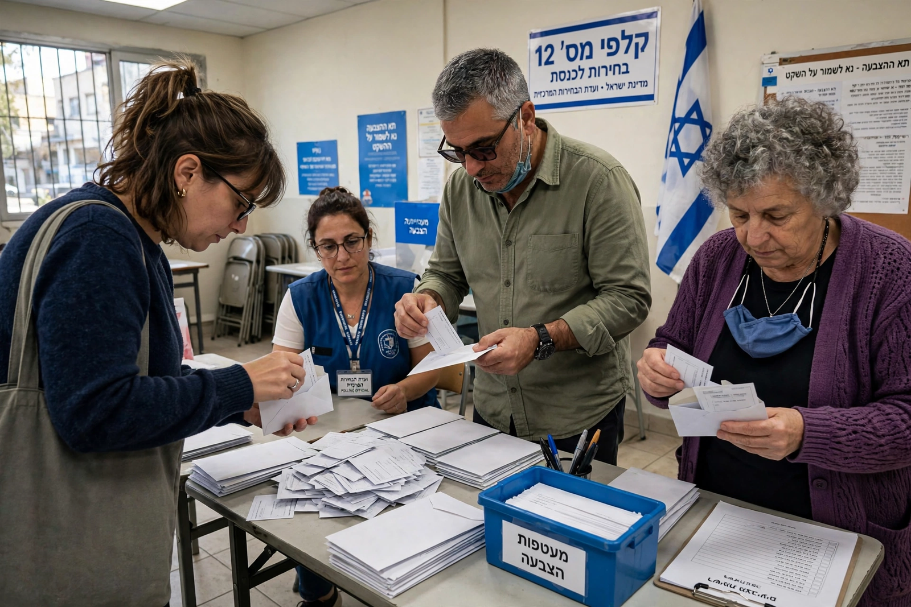

Elections in Israel

Elections in Israel are based on nationwide proportional representation. The electoral system, set out principally in Basic Law: The Knesset, elects the 120 members of the Knesset, Israel's unicameral legislature, from closed party lists in a single nationwide constituency. The electoral threshold, raised several times since the state's founding, is currently 3.25 per cent of the valid vote; seats are allocated among qualifying lists by the D'Hondt method (the Bader–Ofer method), with surplus-vote agreements permitted between lists. The president of Israel is elected by the Knesset by secret ballot, and municipal and mayoral elections are held separately. Since 2001 the prime minister is chosen indirectly, through coalition formation after Knesset elections.
System and administration
Knesset elections are formally held every four years, but the Knesset may dissolve itself earlier, and elections are frequently called ahead of schedule — Israel has rarely let a Knesset serve its full term. Elections are administered by the Central Elections Committee, chaired by a justice of the Supreme Court, which may disqualify lists or candidates that deny the existence of Israel as a Jewish and democratic state, incite racism, or support armed struggle against the state, subject to Supreme Court review. Voting is by paper slip bearing a party's letter code, placed in an envelope behind a screen; election day is a national holiday. Voters must be Israeli citizens aged 18 or over present in the country, as Israel provides almost no absentee voting for ordinary citizens.
Government formation
After elections, the president consults the Knesset factions and tasks the member judged most likely to form a government with assembling a coalition, within 28 days (extendable by 14). Because no single party has ever won an outright majority — the largest-ever result was 56 seats — Israeli governments are always coalitions, and smaller sectoral, religious and ideological parties frequently act as kingmakers. Between 1996 and 2001 Israel experimented with the direct election of the prime minister alongside the Knesset vote; the system, which weakened the large parties and fragmented the Knesset further, was repealed and the earlier method restored.
History
The first elections, to the Constituent Assembly, were held in January 1949, and David Ben-Gurion's Mapai party led every government until 1977, when Menachem Begin's Likud won in the upheaval known as the Mahapakh ("overturn"). Since then power has alternated between right-wing, centrist and left-led blocs. Political instability between 2019 and 2022 produced five elections in under four years before the November 2022 election returned Benjamin Netanyahu to office at the head of a right-wing and religious coalition. Turnout is usually around 65–75 per cent.